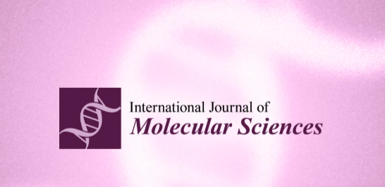
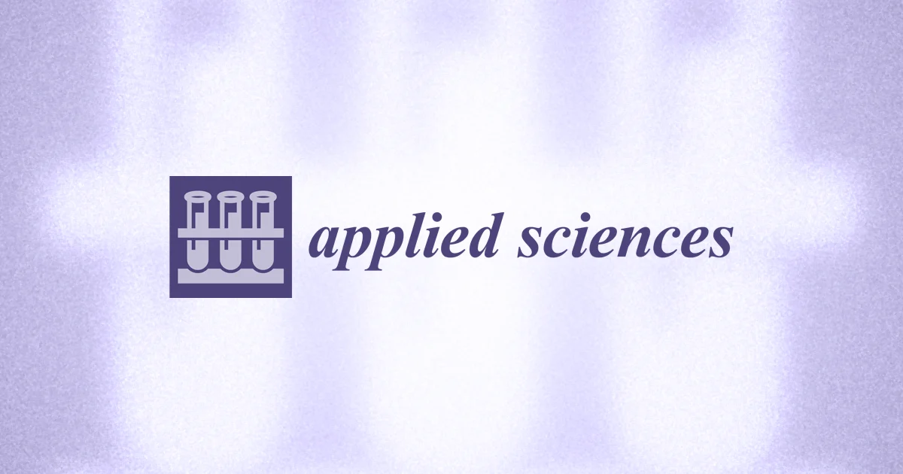

Recent Papers
Dash R, Tran NN, Lee SB, Lee BH.
Structural Dynamics Analysis of USP14 Activation by AKT-Mediated Phosphorylation
Cells. 2024, May 31; 13(11): 955. IF: 6.0. JCR: Q1.
DOI Link →
Bashar MA, Dash N, Mitra S, Dash R*.
Disclosing Pathogenic Variant Effects on the Structural Dynamics of the VAPB MSP Domain Causing Familial ALS
International Journal of Molecular Sciences. 2025, Jul 5; 26(13): 6489. IF: 4.9. JCR: Q1.
DOI Link →Dash R, Munni YA, Mitra S, Choi HJ, Jahan SI, Chowdhury A, Jang TJ, Moon IS*.
Dynamic insights into the effects of nonsynonymous polymorphisms (nsSNPs) on loss of TREM2 function
Scientific Reports. 2022, Jun 07; 12: 9378. IF: 4.9. JCR: Q1.
DOI Link →Dash R, Mitra S, Dash N, Barua L, Mazumder K, Moon IS*.
Bacopa monnieri Promotes Neuronal Development by Regulating the Neurotrophin Signaling Pathway
International Journal of Molecular Sciences. 2026 Mar 27; 27(7): 3048. IF: 4.9. JCR: Q1.
DOI Link →Rahim ZB, Bashar MA, Dash N, Paul S, Ziad R, Mitra S, Dash R*.
Unraveling the distinct motion bias of TrkA-NGF complex in NGFR100W-driven HSAN V disease
bioRxiv. 2025 Feb. [Equal Contribution].
DOI Link →Bashar MA, Hossain MA, Kavey MRH, Shazib R, Islam MS, Ansari SA, Rahman MH*.
Network pharmacology and in silico elucidation of phytochemicals extracted from Ajwa dates to inhibit Akt and PI3K causing TNBC
Current Pharmaceutical Design. 2024 Jun 7; 12(1):1-7. IF: 2.6. JCR: Q2.
DOI Link →
Dash N, Bashar MA, Lee J, Dash R*.
Identification of Novel Biomarkers in Huntington’s Disease Based on Differential Gene Expression Meta-Analysis and Machine Learning Approach
Applied Sciences. 2025 Jul 25; 15(15): 8286. IF: 2.5, JCR: Q2.
DOI Link →Mitra S*, Dash R, Bashar MA, Mazumder K, Moon IS*.
Neuroprotective and Neurotrophic Potential of Flammulina velutipes Extracts in Primary Hippocampal Neuronal Culture
Nutrients. 2025 Sep; 17(19):3107. [Equal Contribution]. IF: 5.0. JCR: Q1.
DOI Link →Hoque N, Tipu MTR, Bashar MA, Dash R, et al.
Investigating the Phytochemical Constituents, Anti-Inflammatory, and Neuropharmacological Activities of Podocarpus neriifolius Leaves
Pharmacology Research & Perspectives. 2026 Jun 02; 14(3): e70272. IF: 2.3. JCR: Q2.
DOI Link →For all published articles, please explore Dr. Dash's Google Scholar Profile:
Google Scholar →